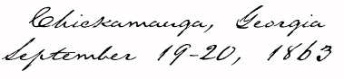
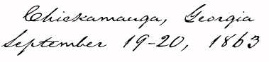
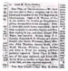
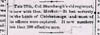
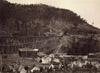
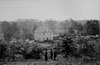
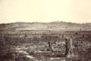
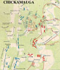
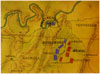

"A Word to Women"Franklin Repository, Sept. 30, 1863
"Scarcely an issue of the Spirit fails to revamp the falsehood that Gov. Curtin
speculated off the soldiers by furnishing them shoddy clothing and unwholesome food."
Franklin Repository, Sept. 30, 1863
"The 77th at Chickamauga" Franklin Repository, October 14, 1863

"...now with Gen. Hooker." Franklin Repository, Dec. 2, 1863

Death of Capt. Stevens, Franklin Repository, Sept. 30, 1863
Civil War panorama, Valley Spirit, Jan. 15, 1864



The Chattanooga-Chickamauga Railroad, from
Landscapes of the Civil War

Lee & Gordon Mills,
Chickamauga Battlefield
from the National Archives




from Civil War Battle Atlas

from The Civil War: An Illustrated History
Physical Description from Sgt. John Obreiter's History of the Regiment
 |
 |
 |
 |
 |
 |